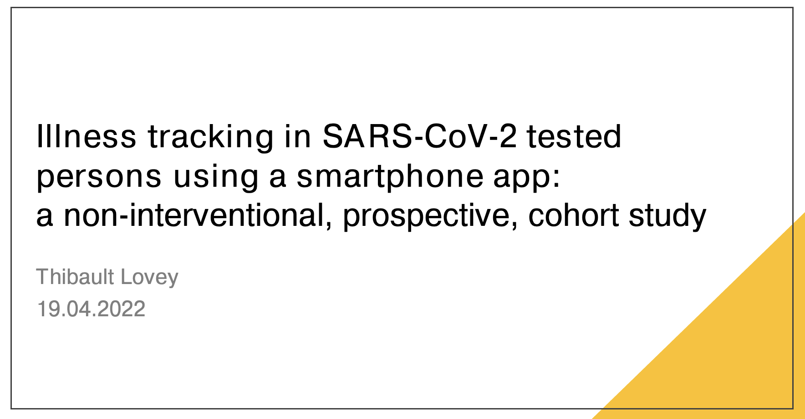

thibaultlovey.com
About Me
Publications
CV
Talks
Source Code
Report a Bug
Talk
Olfactory dysfunction after SARS-CoV-2-Infection?
Overview of the effects of SARS-CoV-2 infection on the olfactory system
Nov 10, 2022
Thibault Lovey

Illness tracking in SARS-CoV-2 tested persons using a smartphone app: a non-interventional, prospective, cohort study
Overview of the effects of SARS-CoV-2 infection on the olfactory system
Apr 19, 2022
Thibault Lovey
No matching items